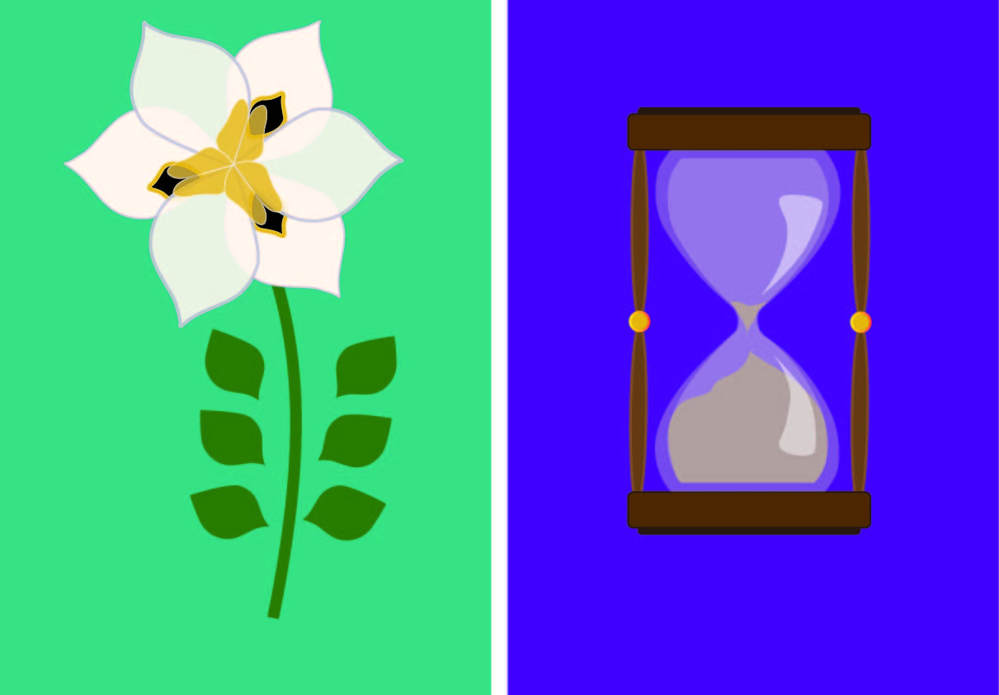
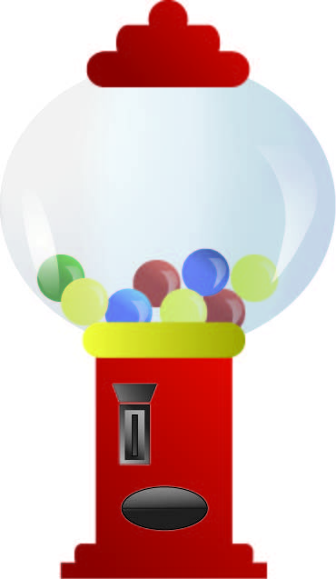
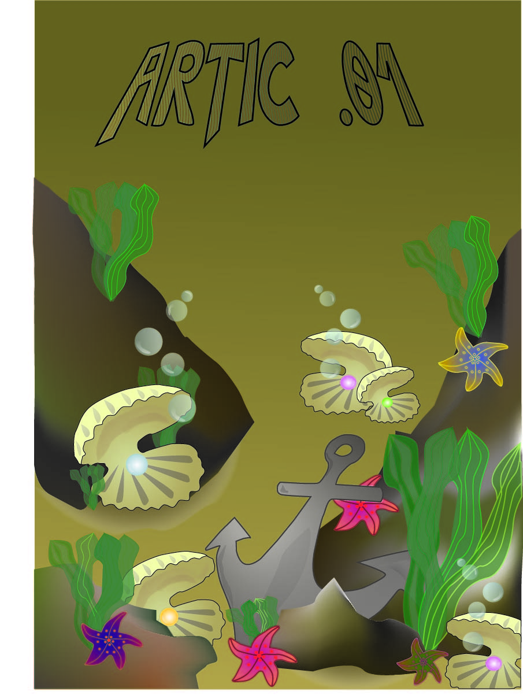
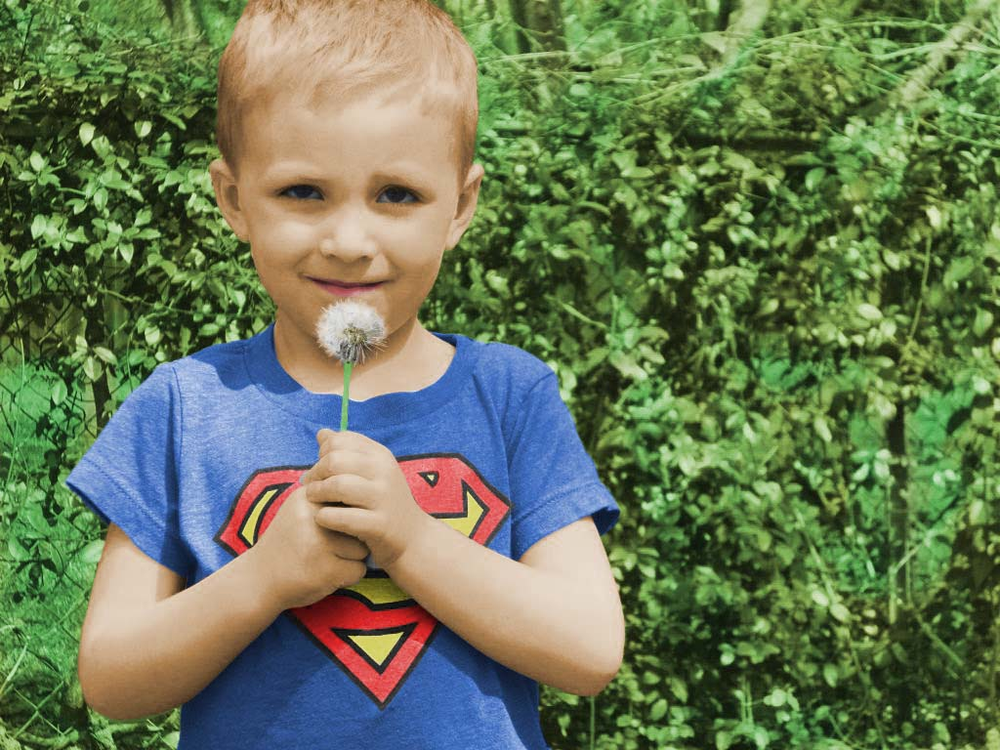
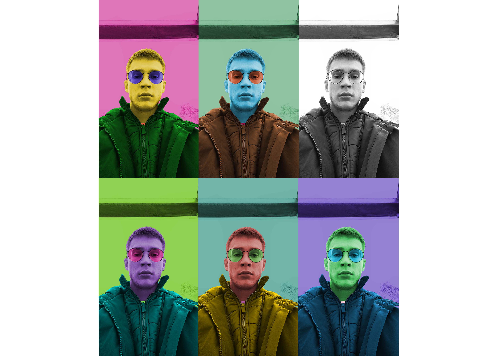
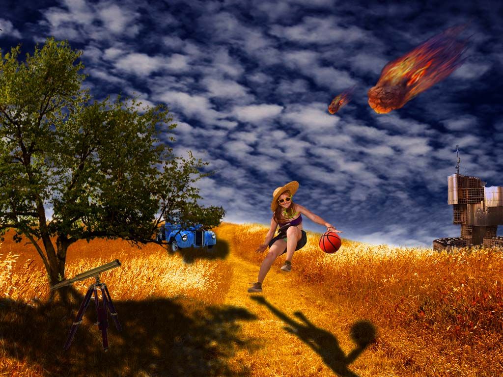
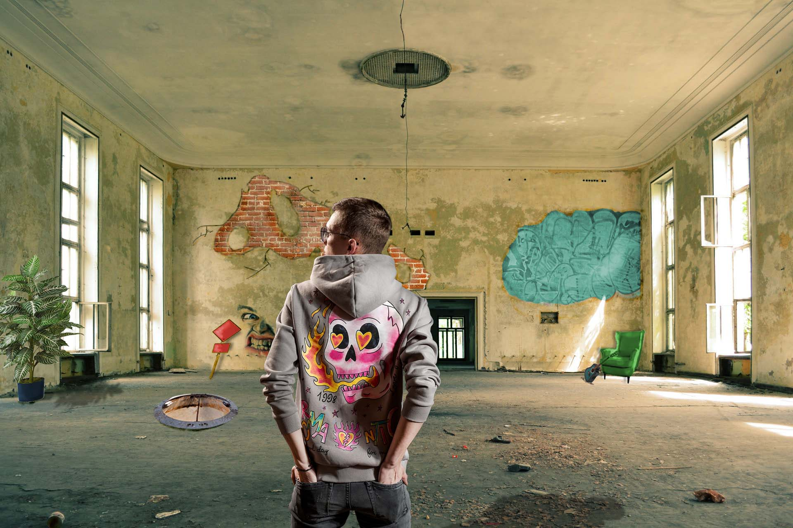

U drugoj vježbi pod nazivom "Krivulje", koristili smo koncept Bézierovih krivulja u koordinatnom sustavu. S već unaprijed zadanim točkama i položajima fonta, zadatak nam je bio stvoriti masku koristeći našu vlastitu dizajniranu tipografiju. Kombiniranjem linija dobivenih iz Bézierovih krivulja oblikovali smo tijelo tipografije.
U trećoj vježbi pod nazivom "Uvod u Illustrator", fokusirali smo se na uvođenje slika u dokument i korištenje tih slika za crtanje različitih zatvorenih objekata. Kroz upotrebu funkcionalnosti kao što su definiranje swatcha boja, transparencije, korištenje Layers-a (slojeva), grupiranje objekata i drugih tehnika, zadatak nam je bio stvoriti ilustraciju cvijeta. Osim toga, također smo radili na vlastitom projektu slobodne teme koji je uključivao sve što smo naučili tijekom ove vježbe.
U četvrtoj vježbi pod nazivom "Gradijenti i transparencija", fokusirali smo se na stvaranje složenih objekata koji se sastoje od više zatvorenih staza (pathova) te korištenje linearnih, radijalnih i mesh gradijenata. Naš zadatak bio je stvoriti ilustraciju koja koristi ove tehnike.
Kao prvi projektni zadatak, dobili smo temu "Flora i fauna podmorja", koja je zahtijevala primjenu svih naučenih tehnika u Illustratoru i FontForge-u određen broj puta. U Illustratoru, koristili smo alate poput crtanja oblika, uređivanja staza, upravljanja bojama i gradientima, primjene transparencije, korištenja slojeva i grupiranja objekata. Sve ove tehnike smo primijenili na stvaranje raznih elemenata vezanih uz morsku floru i faunu, poput koralja, algi, riba, školjki itd. U FontForge-u, koristili smo stečeno znanje o fontovima kako bismo stvorili određeni broj slovnih znakova inspiriranih podmorskom florom i faunom. To je uključivalo dizajniranje krivulja slova, prilagođavanje i uređivanje kontura, definiranje metrika fonta i izradu specifičnih znakova koji su se koristili u projektu. Ova tema nam je pružila priliku da primijenimo sve što smo naučili u oba alata i stvorimo vizualno privlačne elemente inspirirane podmorskim svijetom.
Kao prvi zadatak u Photoshop-u, dobili smo temu "tehnike retuširanja fotografija". Zadatak je imao dva dijela. U prvom dijelu, dobili smo određenu fotografiju koju smo morali retuširati pomoću naučenih tehnika. To uključuje uklanjanje pjegica, nacrtanih crta i dodavanje kose s lijeve strane fotografije. Koristili smo alate poput kloniranja, brisanja i korištenje slojeva kako bismo postigli željene rezultate. Drugi dio bio je prilično sličan samo osoba koju smo retuširali imala je veći broj nepravilnosti na licu.
 U šestoj vježbi pod nazivom "Koloriranje", fokusirali smo se na dodavanje ili mijenjanje boje pomoću selekcije, maski i kanala boja. Zadatak je bio podijeljen u dva dijela. U prvom dijelu zadatka, dobili smo crno-bijelu fotografiju koju smo trebali obojiti koristeći naučene tehnike. To je uključivalo korištenje selekcija i maski kako bismo odabrali određene dijelove slike te dodali ili promijenili boju tih dijelova. U drugom dijelu zadatka, mogli smo koristiti vlastitu fotografiju koju smo pretvorili u crno-bijelu. Zatim smo koristili kanale boja kako bismo dodali boju fotografiji. Na taj način smo stvorili kolorirane verzije fotografija. Ove kolorirane verzije smo zatim postavili uz originalne fotografije kako bismo ih usporedili.
U sedmoj vježbi pod nazivom "Fotomontaža", dobili smo određene fotografije koje smo trebali spojiti u jednu sliku. Nekoliko fotografija smo morali pronaći na internetu kako bismo ih koristili u montaži. Za svaki element koji smo dodali, trebali smo postaviti sjenu kao zaseban sloj, ako bi to imalo smisla u kontekstu slike. Ovo nam je omogućilo da stvorimo dojam prostornosti i realnosti u montaži. Jedan od kompliciranijih objekata koje smo trebali izrezati pomoću kanala bio je stablo. Koristeći kanale boja, imali smo mogućnost precizno izrezati stablo iz pozadine i postaviti ga u montažu.
U drugom projektnom zadatku, imali smo priliku iskoristiti sve naučene tehnike koje smo prethodno usvojili. Dobili smo određene fotografije koje smo, uz vlastite fotografije, trebali kombinirati i manipulirati kako bismo postigli što realističniji rezultat. Ovaj projektni zadatak nam je pružio priliku da primijenimo sve naučene tehnike i razvijemo vještine u stvaranju fotomontaža. Izazovno i zanimljivo je bilo postizanje realističnih sjena koje su bile ključne za ukupni dojam i autentičnost montirane slike.


U osmoj vježbi, nazvanoj "Kinematograf", imali smo priliku raditi s programom Adobe Premiere Pro, kao i s programom Adobe Photoshop. Cilj vježbe bio je izraditi dva GIF-a - jedan već zadani i drugi po vlastitom izboru. U ovoj vježbi smo koristili funkcionalnosti Photoshopa kako bismo izvršili određene zadatke. Jedan od tih zadataka bio je upotreba alata "Add Layer Mask" (Dodaj slojni masker) kako bismo uklonili mali dio fotografije iz videa, koji je jedini bio pokretan. Ovaj postupak nam je omogućio da izdvojimo taj pokretni dio i koristimo ga u GIF-u. Rad s Premiere Pro-om nam je omogućio da kreiramo animirane GIF-ove koristeći različite klipove, efekte i tranzicije. Prvi GIF je bio već zadani, dok smo za drugi GIF imali slobodu odabrati vlastiti materijal i stvoriti animaciju prema vlastitom izboru.
U devetoj i posljednjoj vježbi na stranici, nazvanoj "Obrada videa, zvuka i teksta", dobili smo dva snimka i zvučni zapis koje smo trebali spojiti u jedan video. Prvi dio zadatka bio je već unaprijed zadan, dok smo drugi dio zadatka trebali kreirati sami. Kako bismo postigli željeni rezultat, koristili smo različite efekte i tehnike obrade videa. Neke od korištenih efekata uključivali su "Fade in" i "Fade out" za glatko pojavljivanje i nestajanje scena, "VR Digital Glitch" za digitalne poremećaje na slici te "Blur Length" za zamagljivanje određenih dijelova videa. Također smo primijenili efekte na tekst, koristeći "Effect Wave Wrap" i "Roll" kako bismo stvorili animirani tekst koji se valja ili zamata na ekranu. Uz obradu videa, također smo se posvetili i zvučnom zapisu. Smanjili smo nivo zvuka na početku videa kako bismo postigli željeni efekt.